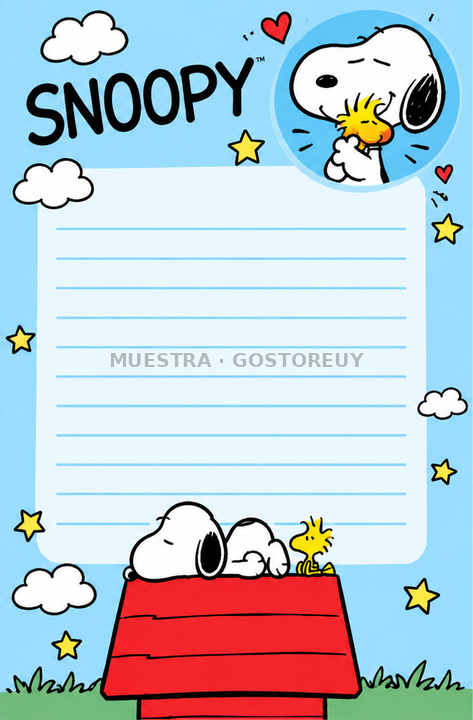

Pluto
Diseño ilustrado de inspiración Disney, no oficial.

Zorrito del bosque
Papelería de diseño original con hojas y tonos naturales.

Garfield
Diseño ilustrado de inspiración Garfield, no oficial.

Snoopy
Diseño ilustrado de inspiración Peanuts, no oficial.